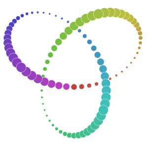
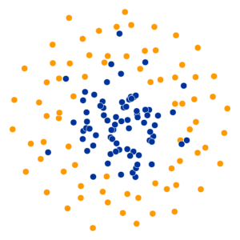
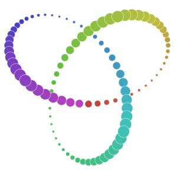
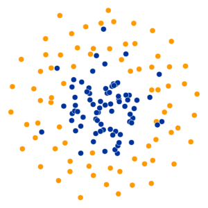

Quick Description
A popular method for exploring high-dimensional data is something called t-SNE, introduced by
The goal is to take a set of points in a high-dimensional space and find a faithful representation of those points in a lower-dimensional space, typically the 2D plane. The algorithm is non-linear and adapts to the underlying data, performing different transformations on different regions. Those differences can be a major source of confusion.
A second feature of t-SNE is a tuneable parameter, "perplexity," which says (loosely) how to balance attention between local and global aspects of your data. The parameter is, in a sense, a guess about the number of close neighbors each point has. The perplexity value has a complex effect on the resulting pictures. The original paper says, "The performance of SNE is fairly robust to changes in the perplexity, and typical values are between 5 and 50." But the story is more nuanced than that. Getting the most from t-SNE may mean analyzing multiple plots with different perplexities.
That's not the end of the complications. The t-SNE algorithm doesn't always produce similar output on successive runs, for example, and there are additional hyperparameters related to the optimization process.

 


